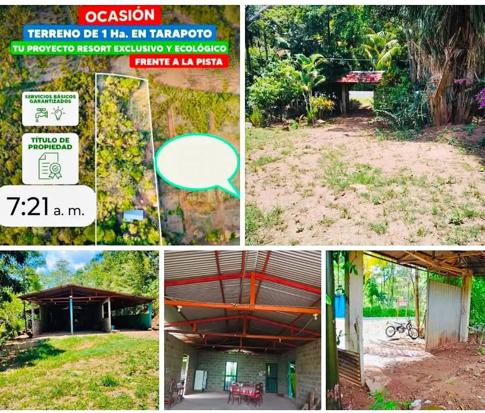

~PEN 320,000 (según el anuncio) 6.436 ha

🚨🌿 ¡GRAN OPORTUNIDAD DE INVERSIÓN! 💰🏡 📍 Frente a la carretera Fernando Belaúnde Norte – Km 15 📌 Sector Churuzapa, Rumizapa – San Martín. 📍 Ubicación: https://maps.google.com/?q=-6.478508,-76.488358 📐 Área Total: 9,643.63 m² 📏 Medidas del terreno: • Frente: 48.18 m • Fondo: 62.21 m • Derecha: 189.76 m • Izquierda: 204.06 m ✨ Beneficios: 💧 Cuenta con acceso a agua y luz 📜 Título de propiedad . 🛣️ Frente a pista, ideal para proyectos agrícolas, recreativos, turísticos o de inversión. 🔥 Precio de Oportunidad: S/ 320,000 soles, negociable 📲 9️⃣4️⃣2️⃣4️⃣5️⃣8️⃣7️⃣6️⃣4️⃣